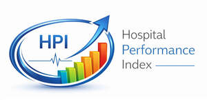

Trade Mark Journal No.2026/011 13 March 2026
UK00004347431 1 March 2026 (9,35,41,42,44)

- Class 9
- Downloadable computer software for healthcare performance measurement and benchmarking; downloadable data analytics software for monitoring hospital performance metrics; downloadable software for generating healthcare performance reports and dashboards; downloadable application software for tracking clinical quality, operational efficiency, workforce performance, digital maturity, patient experience, equity and care coordination metrics; downloadable mobile application software relating to healthcare performance monitoring and benchmarking.
- Class 35
- Healthcare performance assessment and benchmarking services; analysis and evaluation of hospital performance for business management purposes; preparation of healthcare performance reports; operational and workforce performance analysis in healthcare organisations; analysis and evaluation of clinical quality and patient safety performance; analysis of diagnostic performance and medication stewardship practices; analysis of medical communication systems and care coordination processes; assessment of digital maturity and interoperability within healthcare organisations; analysis of patient experience metrics; evaluation of equity and access to care within healthcare institutions; healthcare governance consultancy; healthcare quality improvement consultancy; healthcare performance readiness assessments; gap analysis services relating to hospital management and performance improvement; advisory services relating to healthcare performance measurement.
- Class 41
- Training services relating to hospital performance management; educational services relating to healthcare quality improvement and operational efficiency; provision of workshops and seminars relating to healthcare performance measurement; publication of educational materials relating to healthcare performance frameworks.
- Class 42
- Software as a Service (SaaS) featuring software for monitoring, analysing and reporting hospital performance metrics; provision of online non-downloadable software for healthcare performance measurement and benchmarking; design and development of healthcare performance analytics software; hosting of digital platforms for healthcare performance monitoring; data analytics services in the field of healthcare performance; provision of online dashboards for tracking healthcare performance metrics including clinical quality, diagnostic performance, medication management, operational efficiency, workforce performance, digital maturity, patient experience, equity and care coordination.
- Class 44
- Healthcare advisory services relating to clinical quality improvement; healthcare advisory services relating to patient safety enhancement; consultancy services relating to diagnostic performance improvement; consultancy services relating to medication stewardship and management; advisory services relating to operational efficiency in healthcare organisations; advisory services relating to workforce optimisation in healthcare institutions; advisory services relating to digital healthcare systems implementation; advisory services relating to patient experience improvement; advisory services relating to equity in healthcare delivery; advisory services relating to care coordination and transfer of care improvement.
HOSPITAL PERFORMANCE INDEX (HPI) LTD